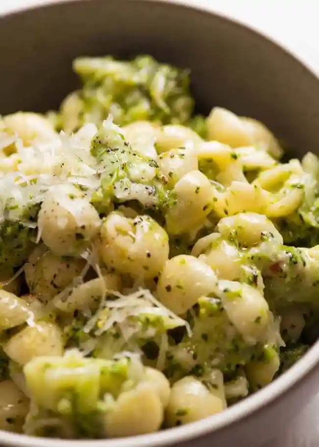
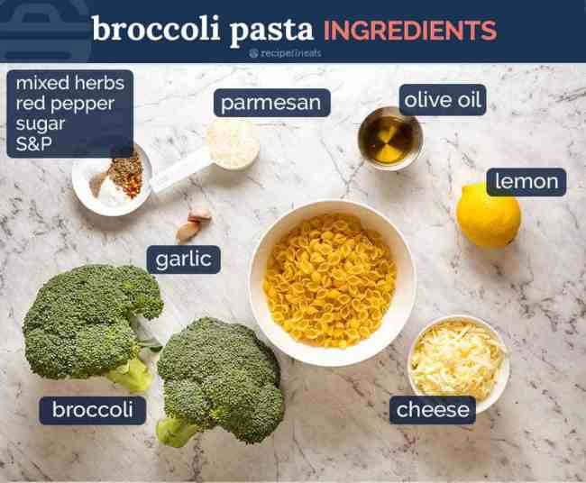

Broccoli Pasta
Home
Lasagna
Roast Lamb

Description
This is one of my best emergency quick dinner ideas and 2-in-1 veg plus
carb side dish. Broccoli, pasta and not much else, it’s a little bit
lemony, a little bit cheesy and a whole lot of yum. The broccoli is cooked
with the pasta then stirred vigorously with sauce to make it juicy and
saucy

Ingredients
- Broccoli
- Whatever else you see in the picture
Steps
- Cook pasta per the packet directions.
-
Chop & cook broccoli - While the pasta is cooking, chop the broccoli
then add it into the water when the pasta is 2 minutes from being done.
- Make sauce - Make the simple lemony pasta sauce
-
Scoop out 1 cup pasta cooking water <- KEY STEP! This is how we make
plenty of sauce without using tons of oil! Add 1/2 cup of this into the
sauce and shake (reserve the rest of the water for later in case you
need it).
-
Put everything in pot - Drain the pasta and return to the same pot. Add
the Sauce and cheese,
-
Toss the pasta, sauce, water and cheese until it’s nice and juicy. Then
DEVOUR!!